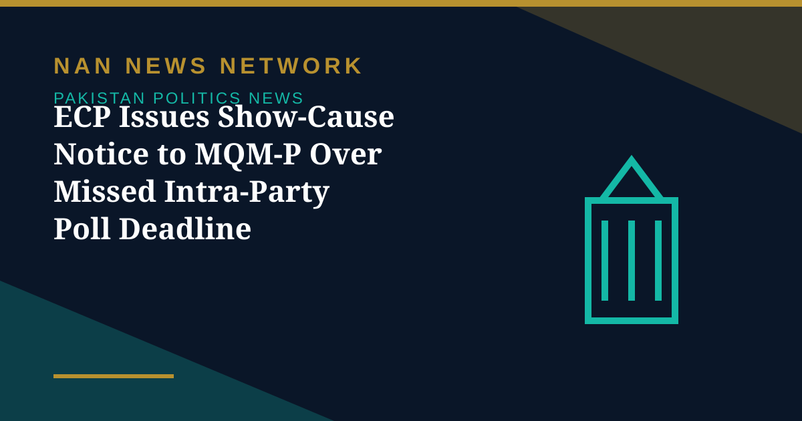

ECP Issues Show-Cause Notice to MQM-P Over Missed Intra-Party Poll Deadline

The Election Commission of Pakistan (ECP) has issued a show-cause notice to the Muttahida Qaumi Movement-Pakistan (MQM-P) for failing to hold mandatory intra-party elections within the extended deadline of October 15, 2026, Aaj English TV reported on November 3.
What the notice says
According to the ECP, the notice was issued on October 26, giving the party 14 days to explain its failure to meet the legal requirement. Under the Elections Act 2017, political parties are required to hold regular elections for their office-bearers and submit an election certificate within seven days of completing the process.
What happens next
MQM-P must now respond within the 14-day window or face further action under the law, though the reports checked did not specify what sanction the Commission would seek if the party does not comply. The notice is a procedural step about internal party elections, not a finding about the party's electoral standing, and the party's response has not yet been reported.
Sources: Aaj English TV, November 3, 2026
More on Pakistan Politics News
- Government Offers PTI Five Seats on Electoral Reforms Committee — and PTI Asks for the 2013 Formula
- MQM-P Launches Street Movement for New Administrative Units, Announces November 29 Rally
- Pakistan Welcomes US Mediation Offer on Taliban Talks — With Conditions
- PTI Hits Back at Shehbaz Sharif Over KP Criticism, Demands End to Governor's Rule
- China's CPC Minister Liu Haixing Arrives in Islamabad on First Official Visit
- PPP Courts Opposition to Join 30-Member Electoral Reforms Committee
- National Assembly Unanimously Passes Workplace Harassment Resolution as Parliament Is Prorogued
- National Assembly Passes Four Government Amendment Bills by Majority Vote
- Opposition Signals Willingness to Join Electoral Reforms Committee After PPP Outreach
- National Assembly Session Suspended After Speaker Finds House Lacks Quorum
- Pakistan Proposes Parliamentary Friendship Group With Turkmenistan
- Lahore High Court Judge Mohsin Akhtar Kayani Resigns, Citing Executive Grip on Judiciary
- Pakistan Says Afghan Firing Kills One in South Waziristan Border District
- Pakistan Marks Kashmir Black Day With Rallies Across the Country
- National Assembly Passes Seven Private Members' Bills, Sends Six to Committees
- Pakistan Strongly Condemns Houthi Missile Attacks Near Makkah and Madinah
- Pakistan, Saudi Arabia and Turkiye Reported to Hold Tehran Talks on De-escalation
- Pakistan LPG Shortage Worsens as Iran Border Crossings Close
- Pakistan Ends Machine-Readable Passports and Switches Fully to E-Passports
- Pakistan Calls for a Fairer Global Order at the United Nations